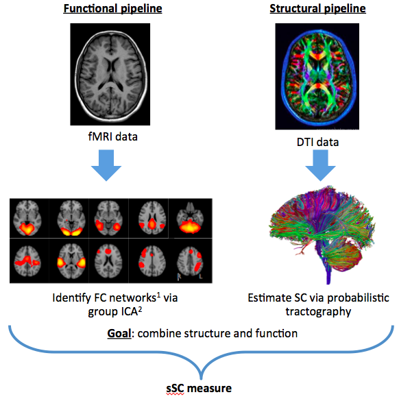
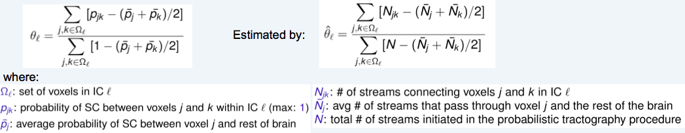
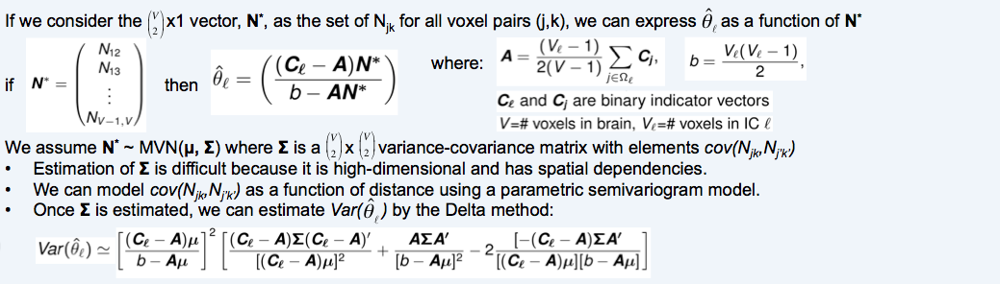
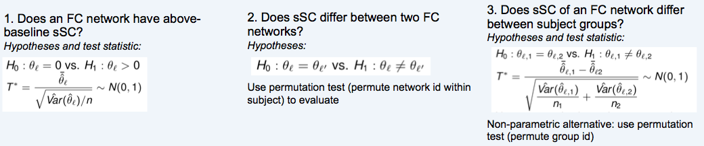
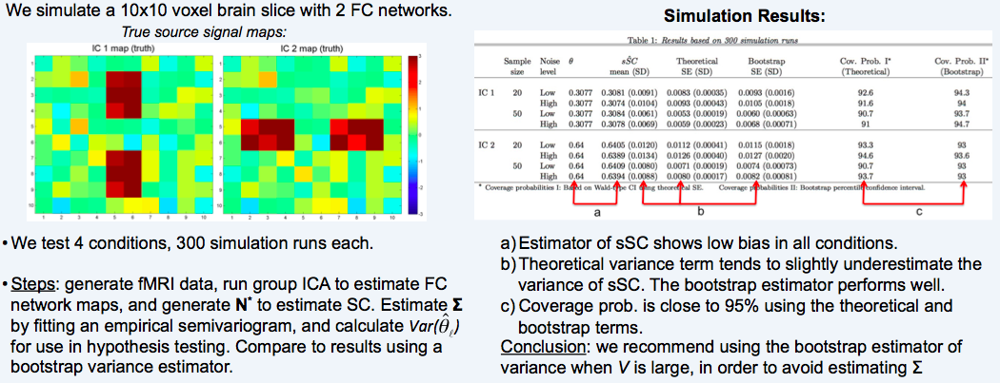
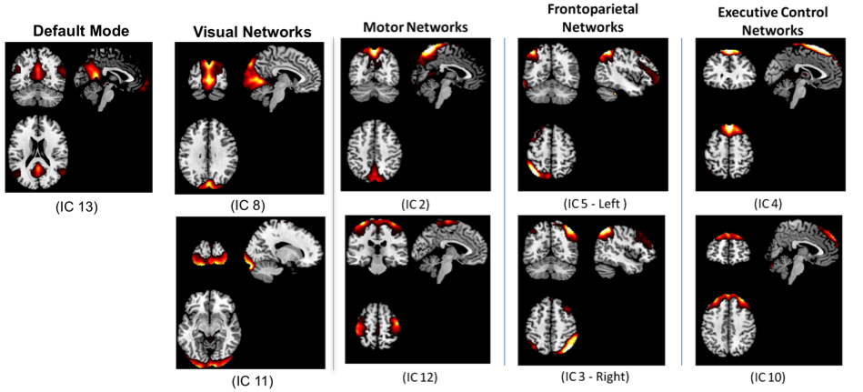
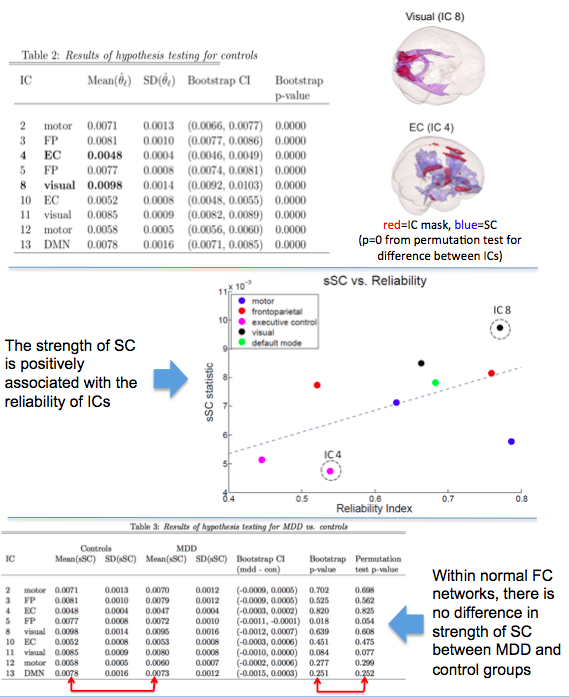

INTRODUCTION
Two main classes of brain imaging:
Functional: commonly measured by fMRI
Structural: measured by diffusion tensor imaging (DTI)
Functional Connectivity (FC) measures the temporal coherence between the BOLD signal (a proxy for brain activity) of spatially remote brain locations.
FC network: a set of functionally connected brain regions
FC networks can be identified from fMRI data.
Independent Component Analysis (ICA) is a popular data-driven method for extracting FC networks, and has several advantages over other techniques.
Structural Connectivity (SC) measures the anatomical connections between brain areas
Probabilistic tractography estimates the SC distribution in the brain based on DTI data.
FC analysis excludes information about the underlying structural connectivity in the brain, yet it is thought that structural fiber tracts facilitate inter-regional interactions in brain activity.
Why combine information across modalities (i.e. fMRI and DTI)?
To better understand the relationship between brain structure and function. FC is usually, but not always accompanied by strong SC3
To characterize pathophysiology of disease. Many disorders exhibit disruptions in FC and/or SC (e.g. Multiple Sclerosis, Stroke, Alzheimer’s Disease)
Our Goal: develop statistical methods that combine FC and SC, and provide a convenient framework to conduct statistical inference

METHODS
Research Questions:
What is the strength of SC underlying FC networks estimated by data-driven methods like ICA ?
Due to the stochastic nature of ICA, results vary. Can SC be used to inform the reliability of FC networks estimated by ICA?
We propose a novel measure of the strength of SC (sSC) underlying an FC network:
The sSC measure represents the above-baseline strength of SC underlying an FC network.
We divide by the maximum possible value to standardize and make comparable between FC networks of different sizes
Inference Framework
Hypothesis testing:
SIMULATION STUDIES
DATA APPLICATION
Data
resting-state fMRI and DTI scans for 20 subjects with Major Depressive Disorder (MDD) & 20 healthy controls
Studies of MDD do not agree about the mechanism of connectivity disruption, and the pathology is unclear4
Analysis
Group ICA on controls’ rs-fMRI data yields 9 resting state networks:
For each IC, estimate the SC distribution by running a probabilistic tractography procedure, initiating N=5000 streams from each voxel in the IC mask.
Results:

CONCLUSTIONS
The proposed sSC measure combines info from the fMRI and DTI modalities
sSC can be used to inform the reliability of networks estimated by ICA
REFERENCES
Smith et al., 2009
Calhoun et al., 2009
Damoiseaux & Greicius et al., 2009
Northoff et al., 2009